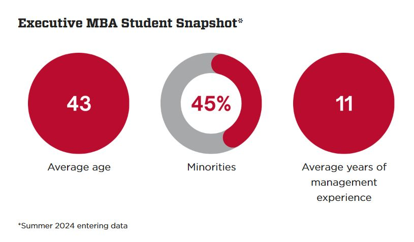

Amy Winter
Web Component Redesign
Student Stats
Graphics created with Canva to increase visual interest and engagement. CSS grid layout stacks the graphics on small screens.
Original

Redesigned
Request Information Form
The restyled form is responsive, with an updated look and branded font. The wording for the Residency field header and dropdown was changed to improve user experience. Privacy disclaimer was added.
Testimonial
The redesigned testimonial is more visually engaging. It emphasizes the degree, it is responsive and it includes branded elements like the red border and the stucco background texture.
Original

Redesigned

Accordion
The redesigned accordion uses the native HTML details/summary element (14 lines) in place of the Bootstrap panel element (53 lines). Less code = quicker load time. The design is also visually lighter and more modern.Sidebar
The redesigned program information sidebar has improved readability and an updated, cleaner design. The buttons were relocated.